Quote Card
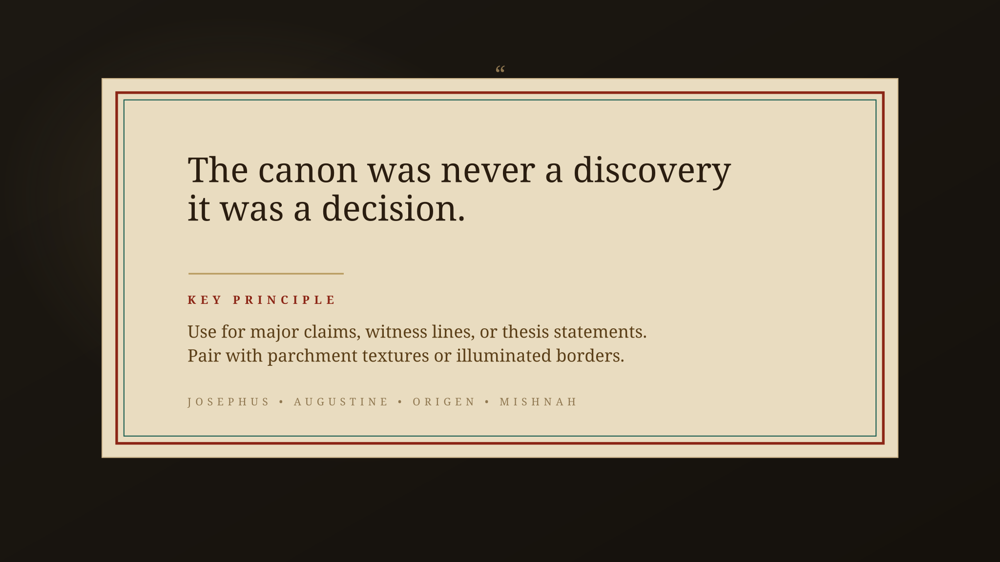
Use for thesis claims, witness lines, and major narrative assertions.
This board isolates the textual side of the visual language: witness quotes, source intros, scripture cards, and thesis statements.
What should remain true: quotation surfaces should feel ceremonial and readable, source cards should feel archival, and strong claims should land with weight rather than flashy motion.
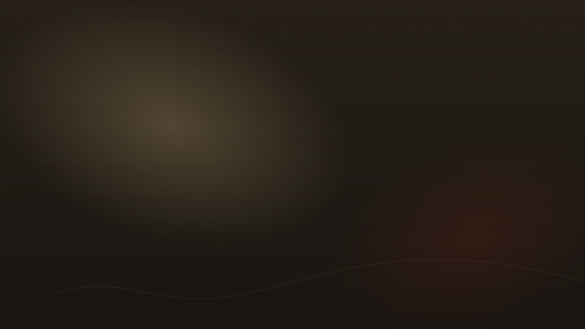
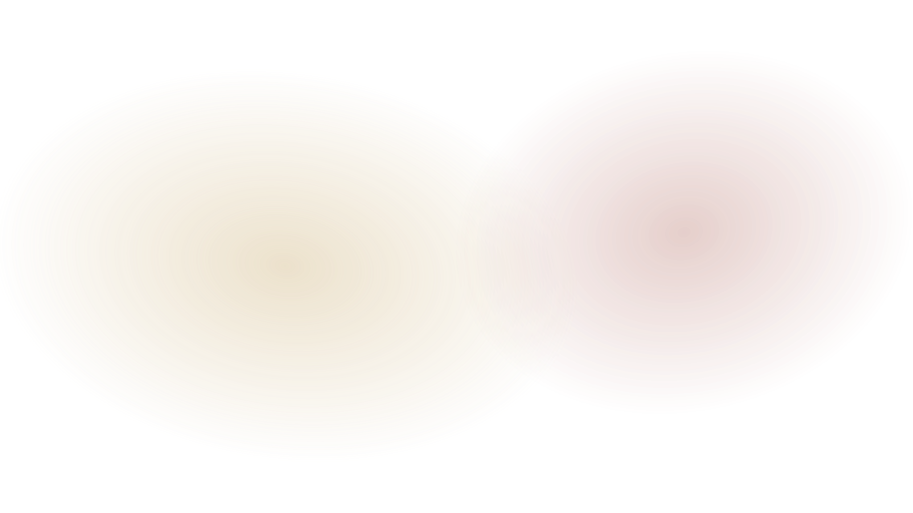
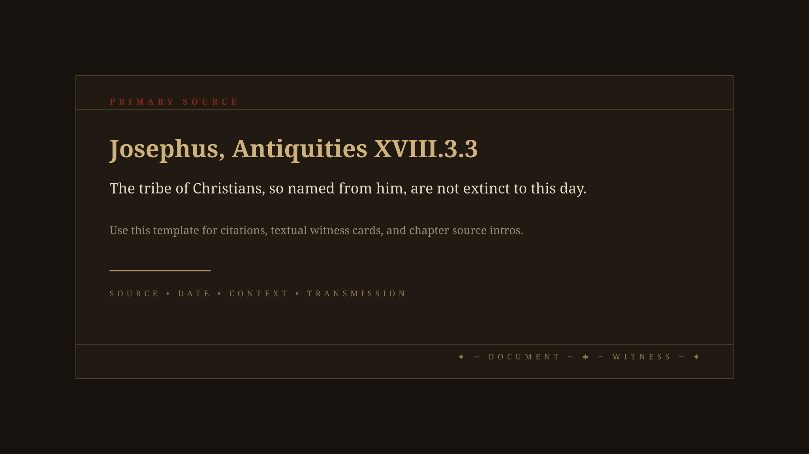

Use for thesis claims, witness lines, and major narrative assertions.
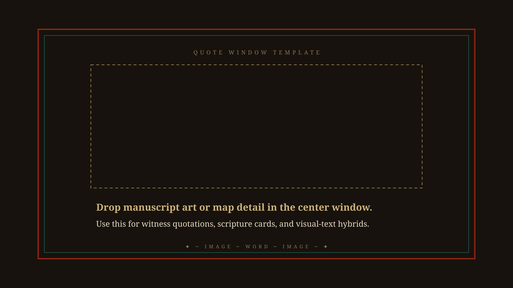
Use when text and image must share the same ceremonial surface.
Primary source intros, textual witness setups, and chapter source cards.
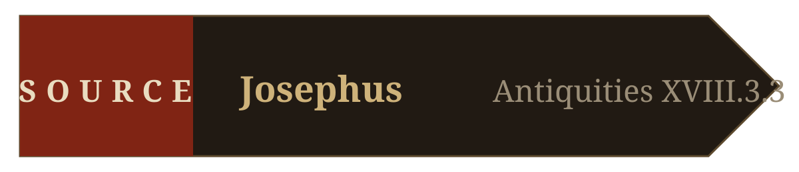
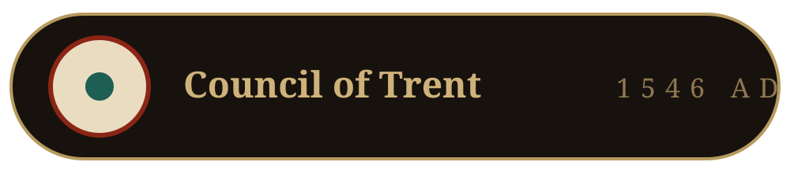
Use these for scholars, councils, source labels, and textual categories.
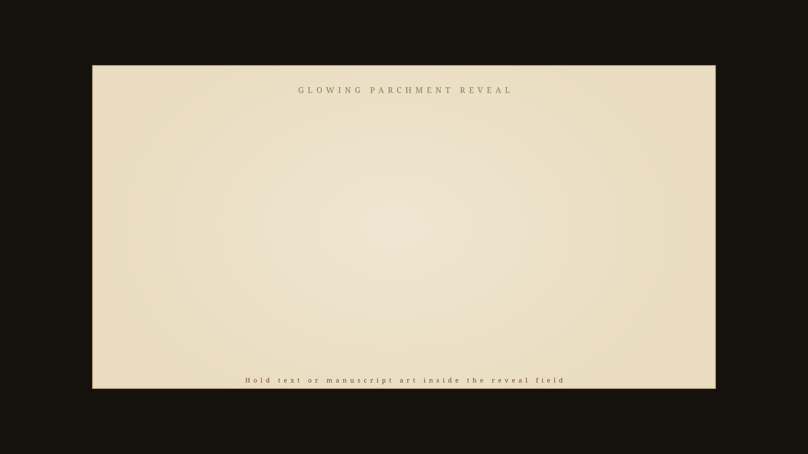
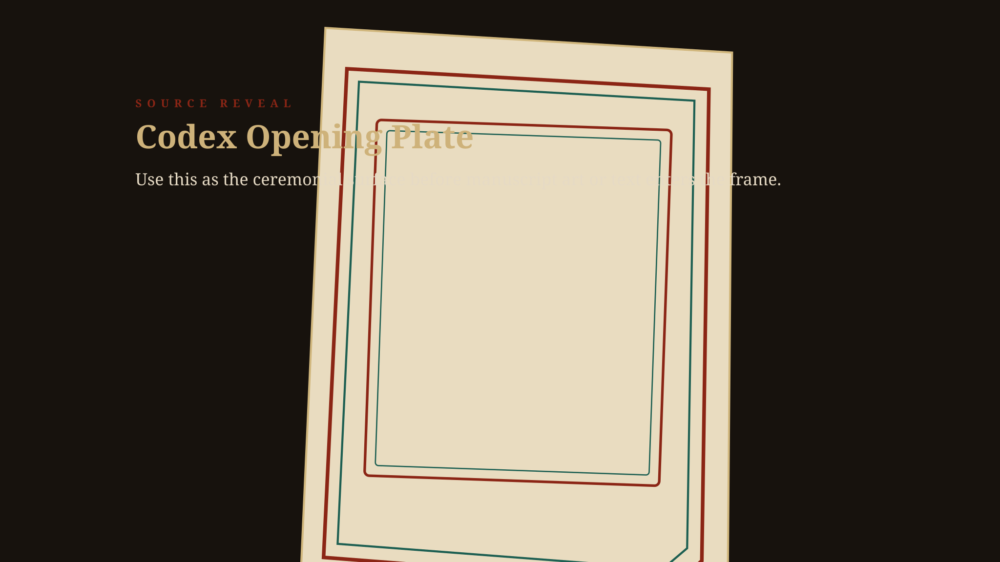
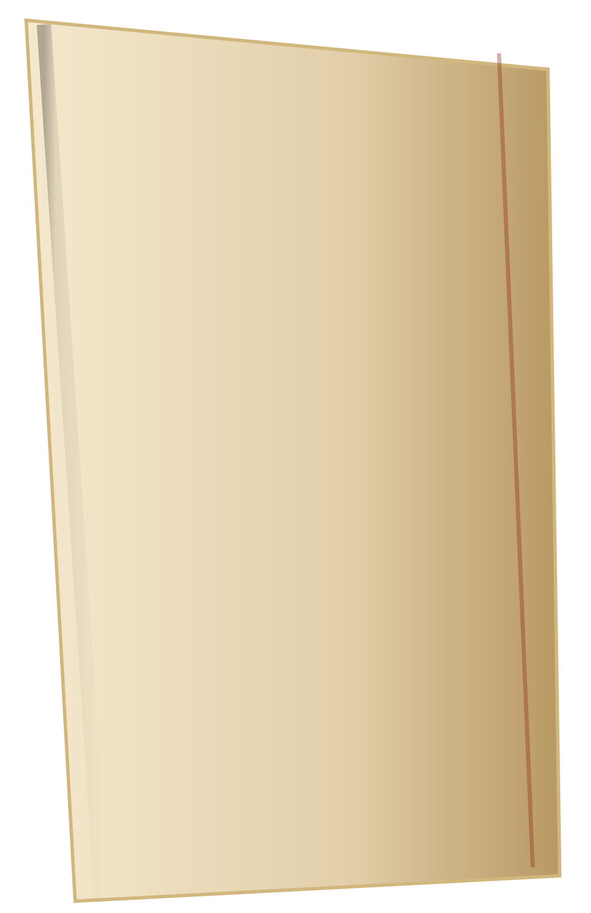
Source cards should enter with ritual weight, not generic fades.
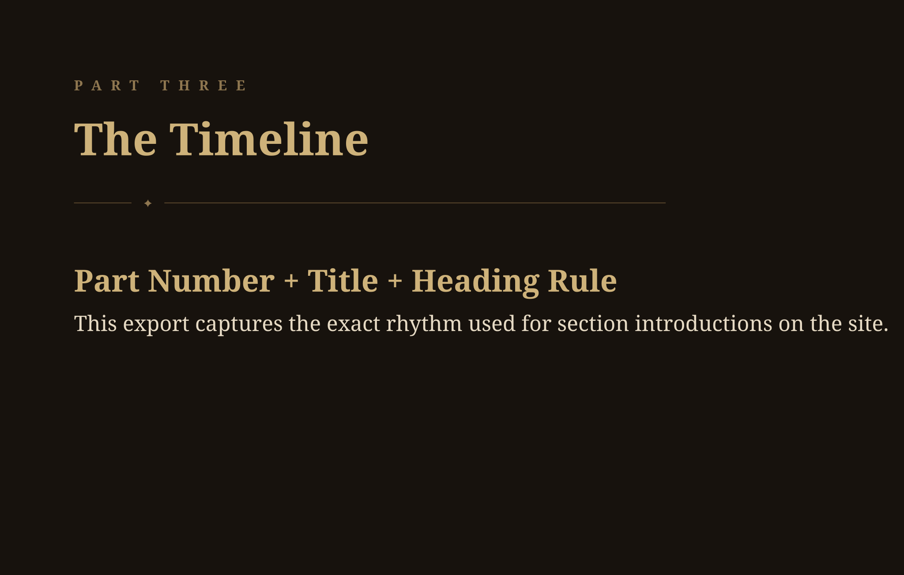
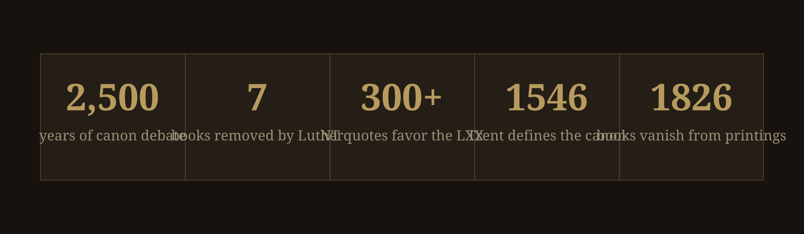
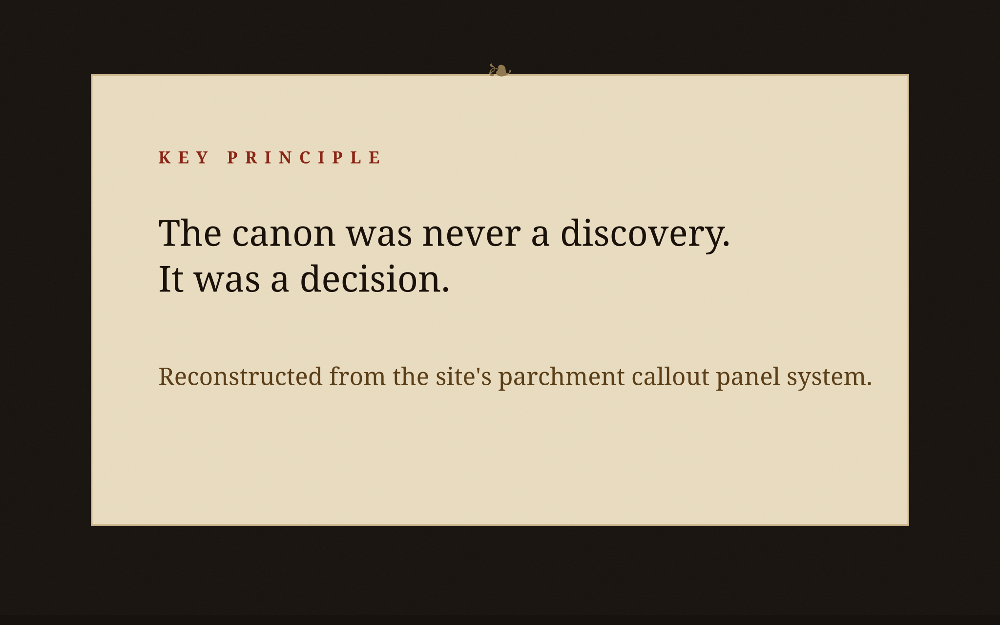
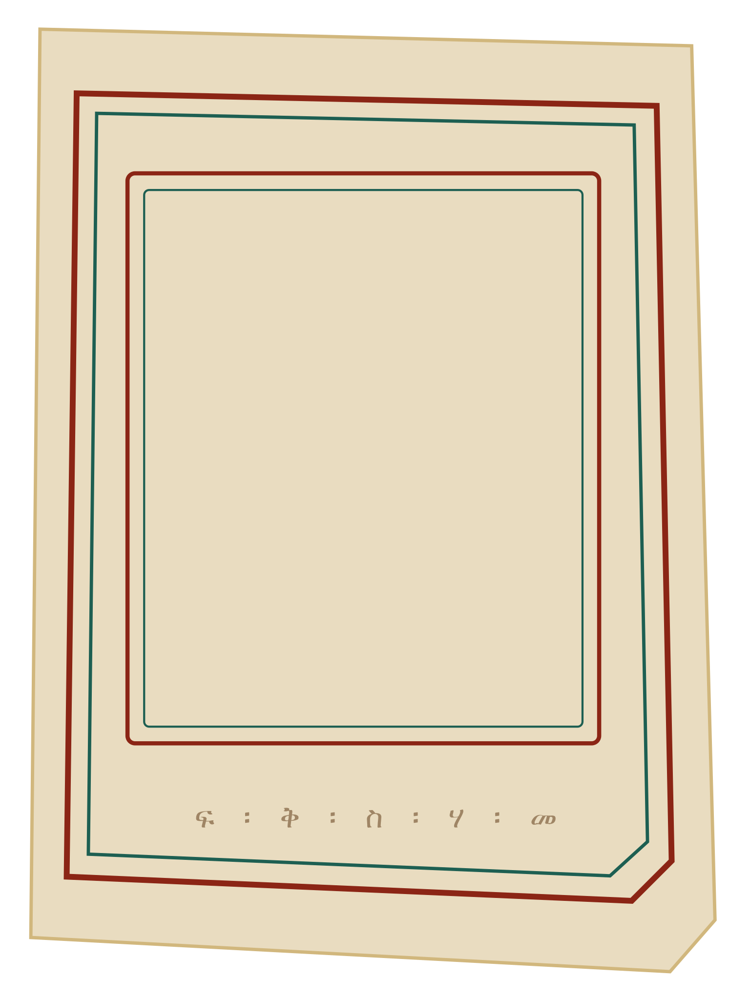